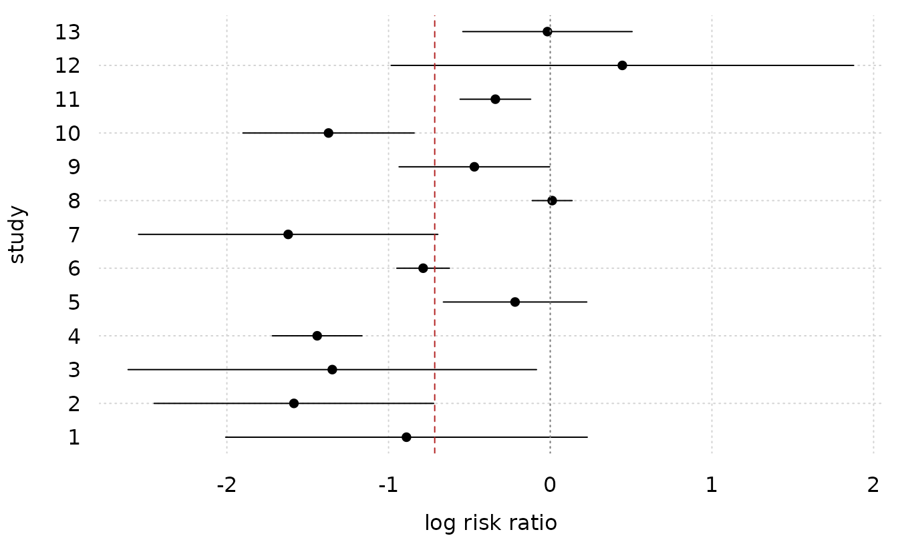
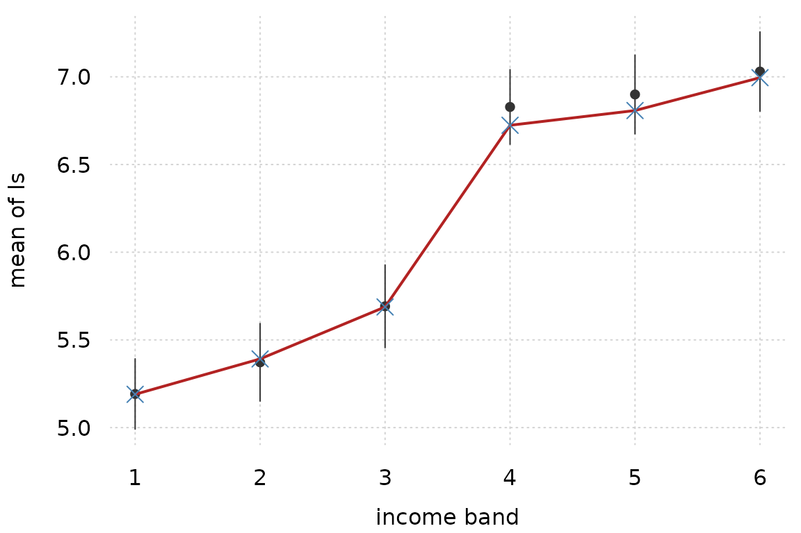
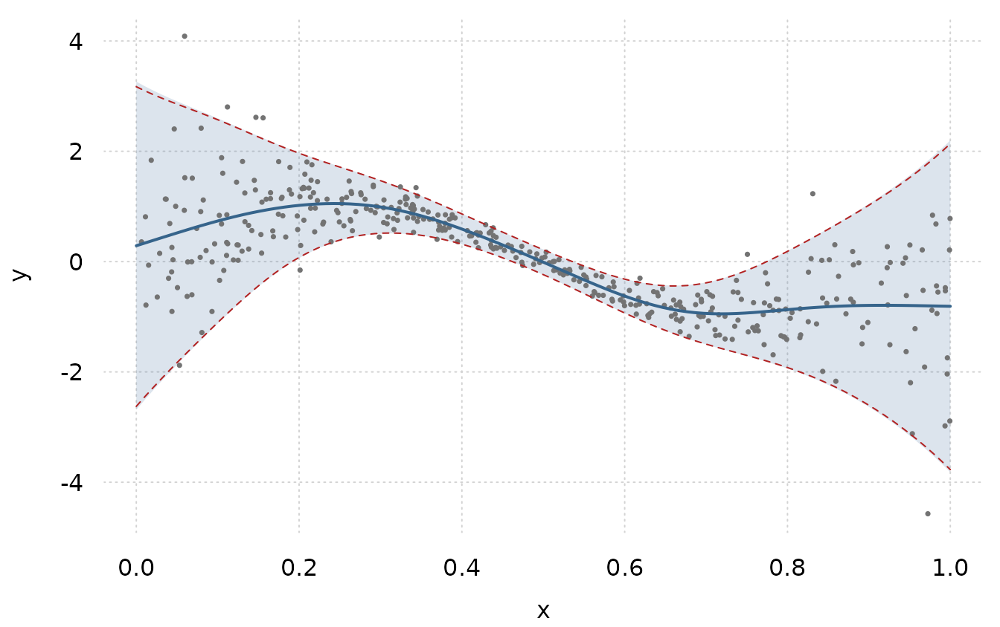
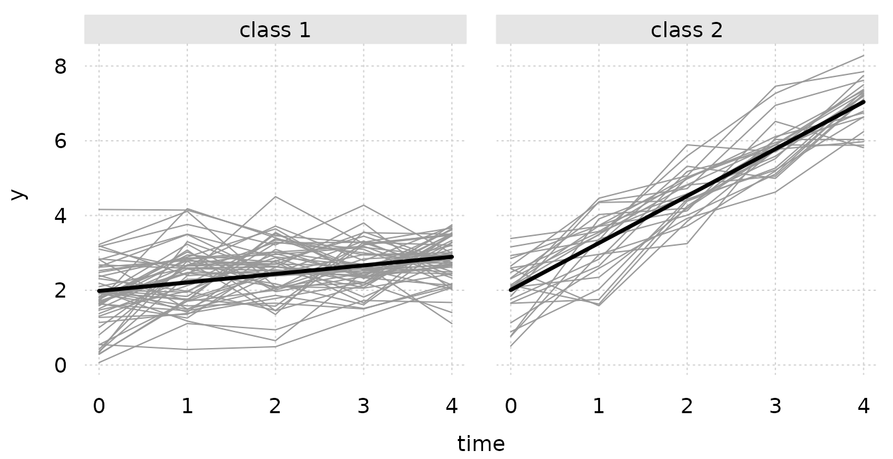
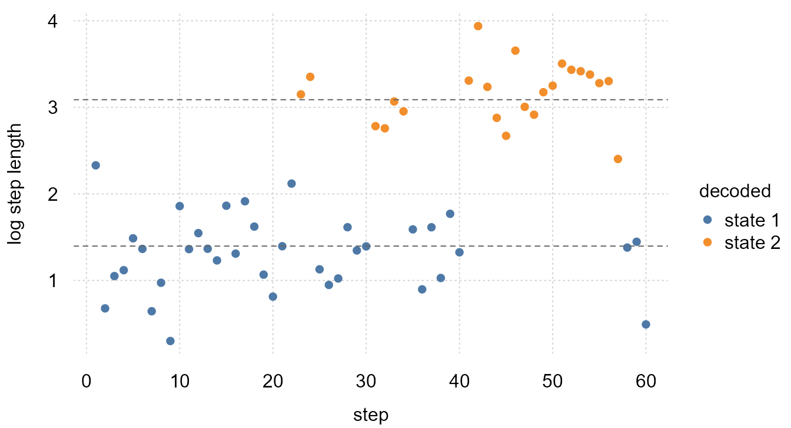
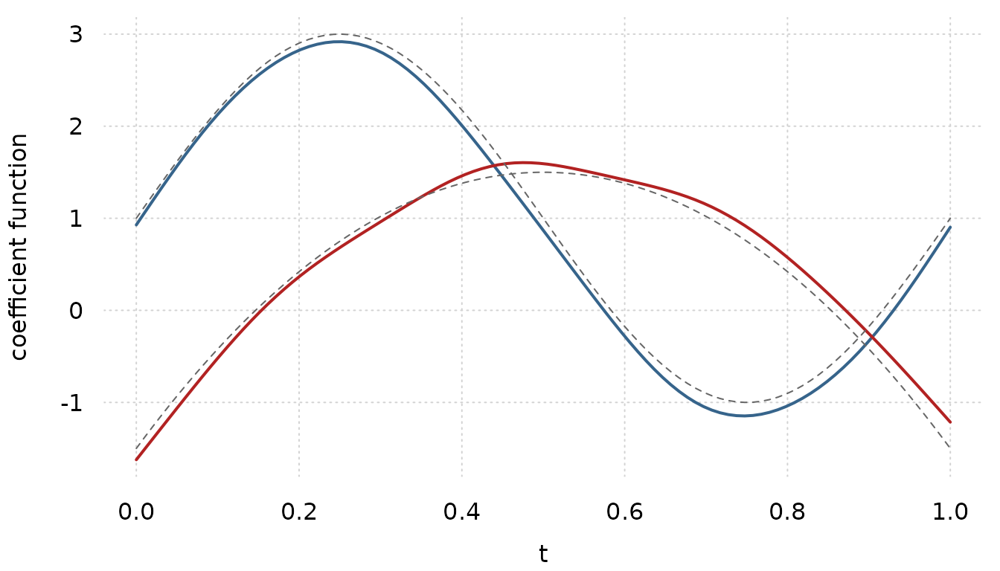
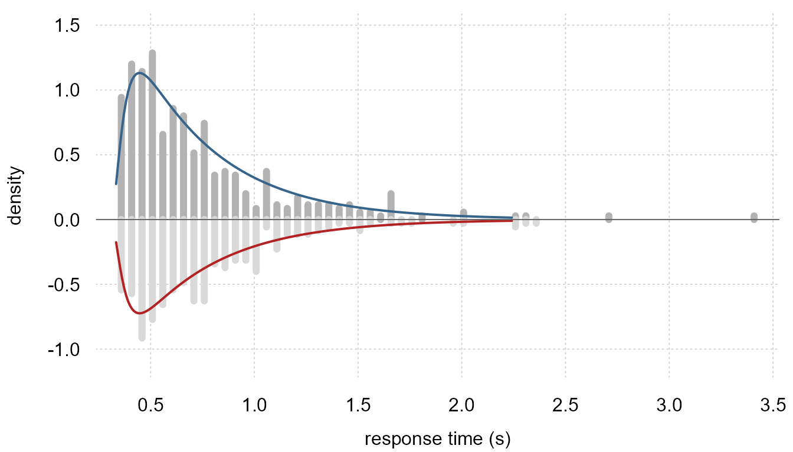
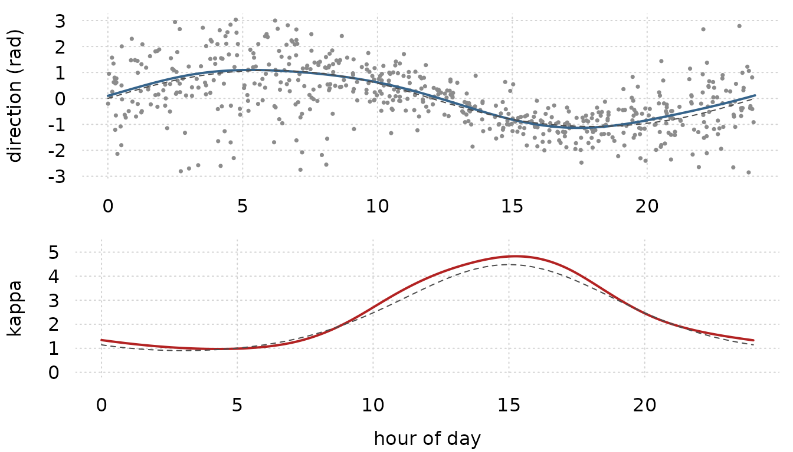

Case studies: models from the showcase literature
Source:vignettes/case-studies.Rmd
case-studies.RmdEach section below takes a model that another package uses to show
what it can do, and fits it with frm(). Every section says
where the model comes from, gives the frmtmb call, reads the output, and
then checks the numbers against a package or a closed form that computes
the same thing a different way. The datasets are small so that this page
rebuilds in under a minute.
Eight sections carry a figure. The figures use tinyplot, which is a suggested package, and they are skipped when it is not installed.
This is not the getting-started page. See
vignette("frmtmb") for the grammar and
vignette("brms-migration") for the brms feature map.
1. The animal model
The animal model is the flagship example of MCMCglmm (Hadfield 2010,
Journal of Statistical Software 33(2); see also Wilson et
al. 2010, Journal of Animal Ecology 79, “An ecologist’s guide
to the animal model”). It splits phenotypic variance into an additive
genetic part and a residual part. Each individual gets one random
effect, and those effects are correlated through the additive
relationship matrix A, which the pedigree determines. Two
individuals with relatedness 0.5, such as full sibs, share half of their
additive genetic deviation in expectation.
The relatedness matrix is not a column of data, so it
travels in data2, exactly as in brms.
gr(id, cov = A) attaches it to the grouping factor.
# a half-sib design: 12 sires, 2 dams each, 6 offspring per pair
nsire <- 12; ndam_per <- 2; noff <- 6
nfound <- nsire + nsire * ndam_per
n <- nfound + nsire * ndam_per * noff
ped <- data.frame(id = 1:n, sire = NA_integer_, dam = NA_integer_)
k <- nfound
for (s in 1:nsire) for (j in 1:ndam_per) {
dam <- nsire + ndam_per * (s - 1) + j
for (o in 1:noff) { k <- k + 1; ped$sire[k] <- s; ped$dam[k] <- dam }
}
# the tabular method builds A from a pedigree sorted parents-first
A <- diag(n)
for (i in seq_len(n)) {
s <- ped$sire[i]; d <- ped$dam[i]
if (!is.na(s)) {
A[i, i] <- 1 + 0.5 * A[s, d]
for (j in seq_len(i - 1)) A[i, j] <- A[j, i] <- 0.5 * (A[j, s] + A[j, d])
}
}
dimnames(A) <- list(as.character(ped$id), as.character(ped$id))
set.seed(9)
dat <- data.frame(id = factor(ped$id, levels = ped$id),
sex = factor(rep(c("f", "m"), length.out = n)))
# additive genetic values with sd 1, residual sd 1, so h2 = 0.5
dat$phen <- 5 + 0.4 * (dat$sex == "m") +
as.numeric(t(chol(A)) %*% rnorm(n)) + rnorm(n, 0, 1)REML = TRUE is the usual choice here, because the
variance components are the estimands and the pedigree is small.
fit <- frm(bf(phen ~ sex + (1 | gr(id, cov = A))) + gaussian(),
data = dat, data2 = list(A = A), REML = TRUE,
control = frmtmb_control(check_olre = "ignore"))
sd_a <- sqrt(VarCorr(fit)[[1]][1, 1])
c(sd_additive = sd_a, sigma = sigma(fit),
heritability = sd_a^2 / (sd_a^2 + sigma(fit)^2))
#> sd_additive sigma heritability
#> 0.9058984 1.0139575 0.4438927The narrow-sense heritability is the intraclass correlation of the
genetic effect, sd_a^2 / (sd_a^2 + sigma^2). The estimate
is near the simulated 0.5.
One warning needs a comment. Every individual appears once, so
id has one level per row. frmtmb warns that such a term is
confounded with the residual. That warning is a false positive when the
block carries a cov = matrix, because A is not
the identity and the two variances are then separately identified.
check_olre = "ignore" turns it off.
Cross-check against the closed-form REML likelihood
For a gaussian animal model the marginal distribution is known in
closed form: y ~ N(X beta, sd_a^2 A + sigma^2 I). The
restricted log likelihood of that model can be written in six lines and
maximized with optim(). It uses no part of frmtmb.
X <- model.matrix(~ sex, dat); y <- dat$phen
nll <- function(p) {
V <- exp(p[1]) * A + exp(p[2]) * diag(n)
Vi <- solve(V); M <- crossprod(X, Vi) %*% X
b <- solve(M, crossprod(X, Vi) %*% y); r <- y - X %*% b
as.numeric(0.5 * ((n - ncol(X)) * log(2 * pi) + determinant(V)$modulus +
determinant(M)$modulus + crossprod(r, Vi %*% r)))
}
op <- optim(c(0, 0), nll, method = "BFGS", control = list(reltol = 1e-13))
out <- rbind(frmtmb = c(sd_a, sigma(fit), as.numeric(logLik(fit))),
closed_form = c(sqrt(exp(op$par)), -op$value))
colnames(out) <- c("sd_additive", "sigma", "restricted_logLik")
out
#> sd_additive sigma restricted_logLik
#> frmtmb 0.9058984 1.013958 -300.9229
#> closed_form 0.9058980 1.013958 -300.9229The variance components and the restricted log likelihood agree to six significant digits.
An interval for heritability
Heritability is a ratio of variance components, so an interval for it
needs more than the table of standard errors. There are two routes.
hypothesis() gives the Wald delta-method version, and it
reads the random-effect standard deviation under its natural-scale name
sd_<group>__<term>:
hypothesis(fit, "sd_id__Intercept^2 / (sd_id__Intercept^2 + sigma^2)")A variance ratio is bounded on [0, 1] and skewed, so a
symmetric delta-method interval is the weaker choice near either
boundary. The parametric bootstrap gives a percentile interval instead.
frm_bootstrap() takes any function of a refit.
bs <- frm_bootstrap(fit, nsim = 30, seed = 1, FUN = function(f) {
v <- VarCorr(f)[[1]][1, 1]
c(h2 = v / (v + sigma(f)^2))
})
confint(bs)
#> lwr upr est
#> h2 0.1983446 0.6446778 0.4438927Thirty draws is a vignette-sized number. Use several hundred for real work.
Two traits at once
MCMCglmm’s multi-response animal model estimates the genetic
correlation between traits. Write it in long format. Stack the traits
into one response column, and give the pedigree block one random
coefficient per trait. The covariance of that block is then the genetic
matrix G, and cov = A makes the full
covariance the Kronecker product of G with the relatedness
matrix. sigma ~ 0 + trait gives each trait its own residual
standard deviation.
The mvbf() spelling with the |ID|
identifier over the same gr(id, cov = A) term fits the same
joint density: the cross-formula merge builds one Kronecker block, and
the two spellings agree in the log likelihood to about 1e-9. The long
format shown here keeps both traits in one formula, which is the shorter
call.
set.seed(4)
G <- matrix(c(1.0, 0.6, 0.6, 0.8), 2, 2)
U <- t(chol(A)) %*% matrix(rnorm(n * 2), n, 2) %*% chol(G)
long <- data.frame(
id = factor(rep(ped$id, times = 2), levels = ped$id),
trait = factor(rep(c("y1", "y2"), each = n)),
value = c(3 + U[, 1] + rnorm(n, 0, 0.7),
1 + U[, 2] + rnorm(n, 0, 0.9)))
fmv <- frm(bf(value ~ 0 + trait + (0 + trait | gr(id, cov = A)),
sigma ~ 0 + trait) + gaussian(),
data = long, data2 = list(A = A))
Gh <- VarCorr(fmv)[[1]]
out <- rbind(
estimated = c(sqrt(diag(Gh)), cov2cor(Gh)[1, 2], exp(fixef(fmv)$sigma)),
simulated = c(sqrt(diag(G)), 0.6 / sqrt(1.0 * 0.8), 0.7, 0.9))
colnames(out) <- c("gen_sd_y1", "gen_sd_y2", "gen_cor",
"resid_sd_y1", "resid_sd_y2")
round(out, 4)
#> gen_sd_y1 gen_sd_y2 gen_cor resid_sd_y1 resid_sd_y2
#> estimated 0.8552 0.7815 0.6782 0.7645 0.8829
#> simulated 1.0000 0.8944 0.6708 0.7000 0.9000The genetic correlation comes out at 0.68 against a simulated 0.67. The genetic standard deviations are low and the residual ones are high, which is the usual trade in a pedigree this small: the two parts of the variance are hard to separate, and 180 individuals is not many.
Checking that the pedigree is doing work
A known-covariance model has one silent failure mode: the matrix is
accepted, ignored, and the fit still converges. The cheap guard is to
refit with the identity in place of A. If the pedigree
carries information, the log likelihood must move.
I <- diag(n); dimnames(I) <- dimnames(A)
fmv_id <- frm(bf(value ~ 0 + trait + (0 + trait | gr(id, cov = I)),
sigma ~ 0 + trait) + gaussian(),
data = long, data2 = list(I = I))
c(with_pedigree = as.numeric(logLik(fmv)),
with_identity = as.numeric(logLik(fmv_id)),
difference = as.numeric(logLik(fmv)) - as.numeric(logLik(fmv_id)))
#> with_pedigree with_identity difference
#> -531.58234 -550.96492 19.38258
stopifnot(as.numeric(logLik(fmv)) - as.numeric(logLik(fmv_id)) > 5)The pedigree buys about 19 log-likelihood points over an unrelated
population. Run this check whenever you pass a matrix through
data2. It is two lines, and it is the only thing that
separates a covariance that is used from a covariance that is merely
accepted.
2. Phylogenetic regression
The brms phylogenetics vignette fits the same structure with a
different matrix. Species share ancestry, so their residual departures
from a regression line are correlated by the phylogeny. Under Brownian
motion that correlation is the shared root-to-tip path length, which
ape::vcv() returns. The model is then a mixed model whose
grouping factor is the species and whose covariance is the phylogenetic
correlation matrix (Housworth, Martins and Lynch 2004; de Villemereuil
and Nakagawa 2014).
set.seed(7)
tree <- ape::rcoal(60)
tree$tip.label <- paste0("sp", 1:60)
# scale the tree to unit depth, so vcv() is a correlation matrix
tree$edge.length <- tree$edge.length / max(ape::node.depth.edgelength(tree))
A_phy <- ape::vcv(tree)
d <- data.frame(sp = factor(tree$tip.label, levels = tree$tip.label),
x = rnorm(60))
d$y <- 0.5 + 0.8 * d$x +
as.numeric(t(chol(A_phy)) %*% rnorm(60)) + rnorm(60, 0, 0.6)
fphy <- frm(bf(y ~ x + (1 | gr(sp, cov = A_phy))) + gaussian(),
data = d, data2 = list(A_phy = A_phy),
control = frmtmb_control(check_olre = "ignore"))
sd_p <- sqrt(VarCorr(fphy)[[1]][1, 1])
c(fixef(fphy)$mu, sd_phylo = sd_p, sigma = sigma(fphy),
phylogenetic_h2 = sd_p^2 / (sd_p^2 + sigma(fphy)^2))
#> (Intercept) x sd_phylo sigma phylogenetic_h2
#> 0.1014840 0.8355372 1.4177448 0.5921060 0.8514823The last quantity is the phylogenetic heritability, also called Pagel’s lambda. It is the share of the residual variance that the tree explains.
Cross-check against PGLS
Phylogenetic generalized least squares fits the same likelihood in a
different parameterization. ape::corPagel gives
nlme::gls() the correlation matrix
lambda * C + (1 - lambda) * I. For a tree scaled to unit
depth that matrix is the frmtmb model’s marginal correlation, so the two
fits are the same model and must agree.
g <- nlme::gls(y ~ x, data = d, method = "ML",
correlation = ape::corPagel(0.5, phy = tree, form = ~sp))
out <- rbind(
frmtmb = c(fixef(fphy)$mu, sd_p^2 / (sd_p^2 + sigma(fphy)^2),
sd_p^2 + sigma(fphy)^2, as.numeric(logLik(fphy))),
gls = c(coef(g), coef(g$modelStruct$corStruct, unconstrained = FALSE),
g$sigma^2, as.numeric(logLik(g))))
colnames(out) <- c("intercept", "x", "lambda", "total_var", "logLik")
out
#> intercept x lambda total_var logLik
#> frmtmb 0.101484 0.8355372 0.8514823 2.36059 -68.34407
#> gls 0.101484 0.8355372 0.8514823 2.36059 -68.34407
lam_gls <- as.numeric(coef(g$modelStruct$corStruct, unconstrained = FALSE))
stopifnot(
max(abs(fixef(fphy)$mu - coef(g))) < 1e-4,
abs(sd_p^2 / (sd_p^2 + sigma(fphy)^2) - lam_gls) < 1e-4,
abs(as.numeric(logLik(fphy)) - as.numeric(logLik(g))) < 1e-4
)Use REML = TRUE and method = "REML"
together if you want the restricted versions. The frmtmb form is the
more general one: it takes covariates in sigma, extra
grouping factors, and non-gaussian families, none of which
gls() offers.
3. Meta-analysis and meta-regression
A random-effects meta-analysis is a mixed model in which every
observation carries a known standard error. The se()
addition term supplies it, which is the same spelling brms uses. The
residual standard deviation is fixed at zero, so the only free variance
is the between-study heterogeneity tau.
The data are the 13 BCG vaccine trials of Colditz et al. (1994), the running example of the metafor package (Viechtbauer 2010, Journal of Statistical Software 36(3)). The effect measure is the log risk ratio of tuberculosis in the vaccinated group.
bcg <- data.frame(
tpos = c(4, 6, 3, 62, 33, 180, 8, 505, 29, 17, 186, 5, 27),
tneg = c(119, 300, 228, 13536, 5036, 1361, 2537, 87886, 7470, 1699,
50448, 2493, 16886),
cpos = c(11, 29, 11, 248, 47, 372, 10, 499, 45, 65, 141, 3, 29),
cneg = c(128, 274, 209, 12619, 5761, 1079, 619, 87892, 7232, 1600,
27197, 2338, 17825),
ablat = c(44, 55, 42, 52, 13, 44, 19, 13, 27, 42, 18, 33, 33))
bcg$yi <- log((bcg$tpos / (bcg$tpos + bcg$tneg)) /
(bcg$cpos / (bcg$cpos + bcg$cneg)))
bcg$vi <- 1 / bcg$tpos - 1 / (bcg$tpos + bcg$tneg) +
1 / bcg$cpos - 1 / (bcg$cpos + bcg$cneg)
bcg$sei <- sqrt(bcg$vi)
bcg$study <- factor(seq_len(nrow(bcg)))
fmeta <- frm(bf(yi | se(sei) ~ 1 + (1 | study)) + gaussian(),
data = bcg, REML = TRUE)
c(pooled_logRR = unname(fixef(fmeta)$mu), se = sqrt(vcov(fmeta)[1, 1]),
tau = sqrt(VarCorr(fmeta)[[1]][1, 1]))
#> pooled_logRR se tau
#> -0.7145323 0.1804360 0.5596814The pooled log risk ratio is about -0.71, which is a risk ratio near
0.49. Between-study heterogeneity is large: tau is
comparable in size to the pooled effect itself.
confint_varcorr() puts an interval on it.
A forest plot puts the pooled estimate next to the studies it pools. Each study is a point with a 95 percent interval from its own known standard error. The dashed line is the pooled log risk ratio and the dotted line is no effect.
pooled <- unname(fixef(fmeta)$mu)
tinyplot::tinyplot(yi ~ study, data = bcg,
ymin = bcg$yi - 1.96 * bcg$sei,
ymax = bcg$yi + 1.96 * bcg$sei,
type = "pointrange", flip = TRUE, theme = "clean2",
col = "black", pch = 16,
xlab = "study", ylab = "log risk ratio")
abline(v = pooled, lty = 2, col = "firebrick")
abline(v = 0, lty = 3, col = "gray50")
The picture explains the large tau. Studies 8 and 11
have short intervals that stay above the pooled line, and studies 4 and
10 have short intervals that stay below it. No single effect size can
hold all 13, so the random-effect term takes up the difference.
confint_varcorr(fmeta)
#> block term type estimate lwr upr
#> 1 1 | study (Intercept) sd 0.5596814 0.3310656 0.9461668Cross-check against metafor
metafor::rma() is the reference implementation of this
model, and it uses REML by default.
rr <- metafor::rma(yi, vi, data = bcg, method = "REML")
out <- rbind(frmtmb = c(unname(fixef(fmeta)$mu), sqrt(vcov(fmeta)[1, 1]),
sqrt(VarCorr(fmeta)[[1]][1, 1])),
metafor = c(as.numeric(rr$beta), rr$se, sqrt(rr$tau2)))
colnames(out) <- c("pooled_logRR", "se", "tau")
out
#> pooled_logRR se tau
#> frmtmb -0.7145323 0.1804360 0.5596814
#> metafor -0.7145323 0.1797815 0.5596815
stopifnot(
abs(fixef(fmeta)$mu - as.numeric(rr$beta)) < 1e-5,
abs(sqrt(VarCorr(fmeta)[[1]][1, 1]) - sqrt(rr$tau2)) < 1e-5,
# the standard errors come from different expressions: metafor uses
# (X'WX)^-1 at the REML tau, frmtmb reads the joint Hessian
abs(sqrt(vcov(fmeta)[1, 1]) / rr$se - 1) < 0.01
)The pooled estimate and the heterogeneity match to five decimal places. The standard errors agree to under one percent, because the two packages compute them from different expressions.
Meta-regression
Adding a moderator makes it a meta-regression. Absolute latitude is the classic moderator for these trials: the vaccine works better away from the equator.
freg <- frm(bf(yi | se(sei) ~ ablat + (1 | study)) + gaussian(),
data = bcg, REML = TRUE)
c(fixef(freg)$mu, tau = sqrt(VarCorr(freg)[[1]][1, 1]))
#> (Intercept) ablat tau
#> 0.25146821 -0.02910173 0.27631135
rr2 <- metafor::rma(yi, vi, mods = ~ablat, data = bcg, method = "REML")
out <- rbind(frmtmb = c(fixef(freg)$mu, sqrt(VarCorr(freg)[[1]][1, 1])),
metafor = c(coef(rr2), sqrt(rr2$tau2)))
colnames(out) <- c("intercept", "ablat", "tau")
out
#> intercept ablat tau
#> frmtmb 0.2514682 -0.02910173 0.2763114
#> metafor 0.2514643 -0.02910166 0.2763235Latitude removes about half of the heterogeneity: tau
falls from 0.56 to 0.28.
Because this is an ordinary mixed model with a fixed residual, the
rest of the grammar still applies. Nested study levels become a second
grouping factor, which is the multilevel meta-analysis. A formula on
sigma turns the fixed residual into a modeled one, which is
se(sei, sigma = TRUE) in brms.
4. Monotonic effects of ordinal predictors
An ordinal predictor such as an income band or a Likert item is
neither a number nor an unordered factor. Treating it as a number forces
equal steps. Treating it as a factor throws the order away.
mo() keeps the order and estimates the step sizes as a
simplex, which is the method of Bürkner and Charpentier (2020,
British Journal of Mathematical and Statistical Psychology 73),
and the subject of the brms monotonic effects vignette.
set.seed(21)
n <- 400; L <- 6
inc <- sample(1:L, n, TRUE)
shape <- c(0, 0.15, 0.3, 0.75, 0.9, 1) # a step between bands 3 and 4
dmo <- data.frame(income = factor(inc, ordered = TRUE), z = rnorm(n))
dmo$ls <- 5 + 2.0 * shape[inc] + 0.4 * dmo$z + rnorm(n, 0, 0.8)
fmo <- frm(bf(ls ~ mo(income) + z) + gaussian(), data = dmo)
fixef(fmo)$mu
#> (Intercept) z moincome
#> 5.1896890 0.4225086 0.3610908moincome is the average step, not the total effect. The
total effect across the whole scale is moincome * (L - 1),
here about 1.8. To read the shape, predict at each band with the other
predictors held fixed and rescale to the unit interval.
nd <- data.frame(income = factor(1:L, ordered = TRUE), z = 0)
p <- predict(fmo, newdata = nd)
rbind(estimated = round((p - p[1]) / (p[L] - p[1]), 3),
simulated = shape)
#> 1 2 3 4 5 6
#> estimated 0 0.112 0.276 0.85 0.896 1
#> simulated 0 0.150 0.300 0.75 0.900 1The fit finds the large step between bands 3 and 4 and the small steps elsewhere.
Cross-check against the saturated factor model
mo() is the saturated factor model with an order
restriction, and it spends the same number of parameters. When the band
means already increase, the restriction is not active and the two fits
are identical.
fsat <- frm(bf(ls ~ income + z) + gaussian(), data = dmo)
out <- rbind(
mo = c(predict(fmo, newdata = nd), logLik(fmo), attr(logLik(fmo), "df")),
saturated = c(predict(fsat, newdata = nd), logLik(fsat),
attr(logLik(fsat), "df")))
colnames(out) <- c(paste0("band", 1:L), "logLik", "df")
round(out, 4)
#> band1 band2 band3 band4 band5 band6 logLik df
#> mo 5.1897 5.3915 5.6879 6.7237 6.8077 6.9951 -481.0059 8
#> saturated 5.1897 5.3915 5.6879 6.7237 6.8077 6.9951 -481.0059 8
stopifnot(max(abs(predict(fmo, newdata = nd) -
predict(fsat, newdata = nd))) < 1e-4)The step shape is easier to read as a picture than as a row of
numbers. The points are the observed band means with 95 percent
intervals, the line is the mo() fit at z = 0,
and the crosses are the saturated factor fit at the same place.
band <- as.numeric(tapply(dmo$ls, dmo$income, mean))
band_se <- as.numeric(tapply(dmo$ls, dmo$income,
function(v) sd(v) / sqrt(length(v))))
tinyplot::tinyplot(x = 1:L, y = band, ymin = band - 1.96 * band_se,
ymax = band + 1.96 * band_se, type = "pointrange",
theme = "clean2", col = "gray20", pch = 16,
xlab = "income band", ylab = "mean of ls")
tinyplot::plt_add(x = 1:L, y = as.numeric(p), type = "l",
col = "firebrick", lwd = 2)
tinyplot::plt_add(x = 1:L, y = as.numeric(predict(fsat, newdata = nd)),
type = "p", pch = 4, cex = 1.6, col = "steelblue")
The big step between bands 3 and 4 is the shape the simulation put there, and the two fits are the same curve.
The value of mo() is not the parameter count. It is that
one coefficient carries the effect size, that the restriction holds when
the data are noisy, and that interactions stay readable.
mo() takes two-way interactions with numeric terms.
fixef(frm(bf(ls ~ mo(income) * z) + gaussian(), data = dmo))$mu
#> (Intercept) z moincome:z moincome
#> 5.18598429 0.38236229 0.01534946 0.36108793The interaction is near zero here, which is right: the simulation has no interaction. A factor multiplier is refused, so expand a factor into numeric indicator columns first.
5. Location-scale regression
GAMLSS calls it a location-scale model, mgcv calls it
gaulss, and brms calls it distributional regression. The
mean and the residual standard deviation both follow smooth functions of
a covariate. In frmtmb this is one bf() with a formula for
sigma, and the smoothing parameters of both smooths are
estimated as variance components.
set.seed(22)
dls <- data.frame(x = runif(400))
dls$y <- rnorm(400, sin(2 * pi * dls$x),
exp(-1 + 1.2 * cos(2 * pi * dls$x)))
fls <- frm(bf(y ~ s(x, k = 10), sigma ~ s(x, k = 10)) + gaussian(),
data = dls)
VarCorr(fls)
#> s(x)
#> Name Std.Dev.
#> sd(wiggle) 2.3021
#> sigma: s(x)
#> Name Std.Dev.
#> sd(wiggle) 2.4656The two standard deviations are the smooths’ wiggliness parameters. A value near zero would mean a straight line.
Cross-check against mgcv
mgcv::gam() with family = gaulss() and
method = "ML" fits the same model. It uses a
logb link for the precision, so its scale parameterization
differs slightly from the plain log link here.
gm <- mgcv::gam(list(y ~ s(x, k = 10), ~ s(x, k = 10)), data = dls,
family = mgcv::gaulss(b = 0), method = "ML")
nd <- data.frame(x = seq(0.05, 0.95, length.out = 6))
pg <- predict(gm, newdata = nd, type = "response")
out <- rbind(frmtmb_mu = predict(fls, newdata = nd),
mgcv_mu = pg[, 1],
frmtmb_sigma = predict(fls, newdata = nd, dpar = "sigma",
type = "response"),
mgcv_sigma = 1 / pg[, 2],
true_sigma = exp(-1 + 1.2 * cos(2 * pi * nd$x)))
colnames(out) <- paste0("x=", round(nd$x, 2))
round(out, 4)
#> x=0.05 x=0.23 x=0.41 x=0.59 x=0.77 x=0.95
#> frmtmb_mu 0.5197 1.0491 0.5352 -0.5705 -0.9096 -0.7964
#> mgcv_mu 0.5115 1.0497 0.5350 -0.5707 -0.9072 -0.7978
#> frmtmb_sigma 1.1933 0.3860 0.1338 0.1487 0.4431 1.1790
#> mgcv_sigma 1.1720 0.3804 0.1315 0.1463 0.4379 1.1597
#> true_sigma 1.1517 0.4276 0.1336 0.1336 0.4276 1.1517
sg <- predict(fls, newdata = nd, dpar = "sigma", type = "response")
stopifnot(
max(abs(predict(fls, newdata = nd) - pg[, 1])) < 0.02,
max(abs(sg * pg[, 2] - 1)) < 0.03
)The two mean curves agree to about 0.01, and the two scale curves to
about two percent. They are not expected to agree exactly, because the
packages choose their smoothing parameters with different criteria. Note
that predict() on a distributional parameter returns the
link scale by default, so type = "response" is needed for a
standard deviation.
One figure holds both curves. The band is the frmtmb mean plus and minus two fitted standard deviations, so its center is the location model and its width is the scale model. The dashed lines are the same band from mgcv.
xg <- data.frame(x = seq(0, 1, length.out = 100))
mu_f <- as.numeric(predict(fls, newdata = xg))
sd_f <- as.numeric(predict(fls, newdata = xg, dpar = "sigma",
type = "response"))
pg <- predict(gm, newdata = xg, type = "response")
tinyplot::tinyplot(x = xg$x, y = mu_f, ymin = mu_f - 2 * sd_f,
ymax = mu_f + 2 * sd_f, type = "ribbon",
theme = "clean2", xlab = "x", ylab = "y",
ylim = range(dls$y))
tinyplot::plt_add(x = dls$x, y = dls$y, type = "p", pch = 16, cex = 0.5,
col = "gray45")
lines(xg$x, mu_f, lwd = 2, col = "steelblue4")
lines(xg$x, pg[, 1] - 2 / pg[, 2], lty = 2, col = "firebrick")
lines(xg$x, pg[, 1] + 2 / pg[, 2], lty = 2, col = "firebrick")
The band is narrow where cos(2 pi x) is smallest, near
x = 0.5, and it opens at both ends. A constant-variance
smooth would draw a band of one width and would miss both. The mgcv
lines sit on the edges of the frmtmb band, which is the agreement of the
table above, drawn.
6. Growth mixture models
A growth mixture model says that a population contains latent classes
with different trajectories, and that individuals inside a class still
vary. It comes from the structural equation modeling literature (Muthen
and Shedden 1999, Biometrics 55), and brms fits it with
mixture(..., groups = ~id).
The groups argument is what makes it a growth mixture
rather than an observation-level mixture. Without it, every measurement
could belong to a different class. With it, the class is drawn once per
subject, so all of a subject’s measurements come from the same
component.
set.seed(31)
nid <- 80; nt <- 5
cls <- rbinom(nid, 1, 0.4) # class membership per subject
id <- rep(seq_len(nid), each = nt)
dg <- data.frame(id = factor(id), time = rep(0:(nt - 1), nid))
b0 <- 2 + rnorm(nid, 0, 0.5) # random intercept inside class
b1 <- c(0.2, 1.2)[cls + 1] # slow and fast classes
dg$y <- b0[id] + b1[id] * dg$time + rnorm(nid * nt, 0, 0.6)
fgmm <- frm(bf(y ~ time + (1 | id)) +
mixture(gaussian(), gaussian(), groups = ~id),
data = dg)
rbind(class1 = fixef(fgmm)$mu1, class2 = fixef(fgmm)$mu2)
#> (Intercept) time
#> class1 1.981932 0.227937
#> class2 2.006057 1.258254Each component keeps its own intercept, slope, residual standard deviation, and random intercept. The two slopes recover the slow and fast trajectories.
mixture_probs() gives the posterior class probability of
each subject.
pr <- mixture_probs(fgmm)
head(round(pr, 3), 3)
#> class1 class2
#> 1 1 0
#> 2 0 1
#> 3 1 0
assigned <- max.col(pr) - 1L
# label switching is inherent to a mixture, so score both labelings
max(mean(assigned == cls), mean(assigned != cls))
#> [1] 1Every subject is classified correctly here, because the two trajectories separate well over five time points. Real growth mixture models are rarely this clean.
Split the subject trajectories by the class the model gives them, and draw each component mean over its own panel.
dg$class <- factor(assigned[as.integer(dg$id)] + 1L,
labels = c("class 1", "class 2"))
tt <- 0:(nt - 1)
b <- rbind(fixef(fgmm)$mu1, fixef(fgmm)$mu2)
comp <- data.frame(
time = rep(tt, 2),
yhat = c(b[1, 1] + b[1, 2] * tt, b[2, 1] + b[2, 2] * tt),
class = factor(rep(c("class 1", "class 2"), each = length(tt))))
tinyplot::tinyplot(y ~ time | id, data = dg, facet = ~class, type = "l",
col = "gray60", legend = FALSE, theme = "clean2",
xlab = "time", ylab = "y")
tinyplot::plt_add(yhat ~ time, data = comp, facet = ~class, type = "l",
col = "black", lwd = 3)
The two panels are the model’s answer to the question the mixture asks. Inside a panel the lines are near parallel, which is the random intercept. Between panels the lines differ in slope, which is the class.
Two cautions carry over from any maximum likelihood mixture. The
likelihood is multimodal, so compare starting values with
frm_allfit(). And a mixture will always find classes,
whether or not they exist, so a model comparison against the
single-class fit is the minimum evidence for reporting them.
7. Measurement error in a predictor
When a predictor is measured with error, regression on the measured
value is biased toward zero. The bias factor is the reliability ratio,
var(true) / (var(true) + sd_error^2). brms corrects it by
giving the mismeasured variable its own sub-model with a known error
standard deviation, spelled mi(sdx) on that response and
mi(x) in the predictor of interest. frmtmb uses the same
spelling and integrates the latent true values out with the Laplace
approximation.
set.seed(3)
n <- 300
z <- rnorm(n)
x_true <- rnorm(n, 0.5 * z, 1)
su <- 0.6 # known measurement error sd
dme <- data.frame(x = x_true + rnorm(n, 0, su), z = z, su = su)
dme$y <- 1 + 1.0 * x_true + 0.3 * z + rnorm(n, 0, 0.7)
fme <- frm(bf(y ~ mi(x) + z) + gaussian() +
bf(x | mi(su) ~ z) + gaussian(),
data = dme)
fixef(fme)$y_mu
#> (Intercept) z mix
#> 0.9701430 0.3316064 1.0379531The coefficient on the latent x is mix.
Compare it with the naive regression on the measured value, and with the
attenuation that theory predicts.
naive <- coef(lm(y ~ x + z, data = dme))[["x"]]
c(naive = naive,
predicted_attenuation = 1.0 * var(x_true) / (var(x_true) + su^2),
corrected = fixef(fme)$y_mu[["mix"]],
simulated_truth = 1.0)
#> naive predicted_attenuation corrected
#> 0.7703484 0.7855849 1.0379531
#> simulated_truth
#> 1.0000000
stopifnot(fixef(fme)$y_mu[["mix"]] > naive + 0.1)The naive slope sits near the attenuated value that theory predicts. The corrected slope is close to the truth. The correction is not free: it widens the standard error, because the latent values are estimated rather than observed.
c(naive_se = summary(lm(y ~ x + z, data = dme))$coefficients["x", 2],
corrected_se = sqrt(diag(vcov(fme)))[["y_mix"]])
#> naive_se corrected_se
#> 0.04373838 0.06561259The same machinery with mi() and no standard deviation
imputes missing values in one step instead of correcting known
error.
8. Sequential ordinal models with category-specific effects
The proportional odds assumption says one slope governs every
category threshold. cs() relaxes it and gives each
threshold its own slope, which is brms’s category-specific effect. Under
the cumulative parameterization that model can produce negative
probabilities, so brms and frmtmb both refuse it there and accept it for
the sequential families sratio, cratio, and
acat.
set.seed(51)
n <- 500
xo <- rnorm(n)
th <- c(-1.6, 0, 1.6); eff <- c(0.3, 0.6, 0.9)
Y <- integer(n)
for (i in seq_len(n)) {
cp <- c(plogis(th - eff * xo[i]), 1)
Y[i] <- sample(1:4, 1, prob = diff(c(0, cp)))
}
dord <- data.frame(y = factor(Y, ordered = TRUE), x = xo)
fcs <- frm(bf(y ~ cs(x)) + sratio(), data = dord)
confint(fcs)
#> lwr upr est
#> tau_raw_1 -1.56199837 -1.1273843 -1.3446913
#> tau_raw_2 -0.47074653 0.2194181 -0.1256642
#> tau_raw_3 0.19217398 0.6924868 0.4423304
#> bcs2_1 -0.07596964 0.3784579 0.1512441
#> bcs2_2 0.47728264 0.9677442 0.7225134
#> bcs2_3 0.40132291 1.0910031 0.7461630tau_raw holds the thresholds on an internal increasing
scale. bcs2_k is the effect of x at threshold
k. The three effects grow, which is what the simulation put
there.
Cross-check against a set of binomial regressions
The sequential model has an exact decomposition. It asks, at each
category in turn, whether the process stops there given that it reached
there. Those questions are independent, so the model is equivalent to
K - 1 separate logistic regressions on shrinking subsets,
and the log likelihoods add up (Laara and Matthews 1985,
Biometrika 72; Tutz 1991).
glm_fits <- lapply(1:3, function(k) {
sub <- dord[as.integer(dord$y) >= k, ]
glm(as.integer(as.integer(sub$y) == k) ~ x, data = sub,
family = binomial())
})
rbind(frmtmb = confint(fcs)[paste0("bcs2_", 1:3), "est"],
# the binary question is "stop here", so the sign is reversed
binomial_glms = -vapply(glm_fits, function(g) coef(g)[["x"]], 0))
#> bcs2_1 bcs2_2 bcs2_3
#> frmtmb 0.1512441 0.7225134 0.7461630
#> binomial_glms 0.1512442 0.7225128 0.7461606
c(frmtmb = as.numeric(logLik(fcs)),
sum_of_glms = sum(vapply(glm_fits, function(g) as.numeric(logLik(g)), 0)))
#> frmtmb sum_of_glms
#> -638.4767 -638.4767
stopifnot(
max(abs(confint(fcs)[paste0("bcs2_", 1:3), "est"] +
vapply(glm_fits, function(g) coef(g)[["x"]], 0))) < 1e-4,
abs(as.numeric(logLik(fcs)) -
sum(vapply(glm_fits, function(g) as.numeric(logLik(g)), 0))) < 1e-6
)The coefficients and the log likelihood agree exactly. The frmtmb form is the more general one, because the decomposition breaks as soon as a random effect is shared between thresholds, and frmtmb keeps working.
A proportional odds fit is the null model, and anova()
tests the restriction.
9. Hidden Markov models for an animal track
An animal alternates between behavioral modes. While it forages it
takes short, undirected steps; while it travels it takes long ones. The
mode is not observed, but it persists, so the movement package
literature models it as a Markov chain over the steps and the step
length as a state-dependent distribution (Michelot, Langrock and
Patterson 2016, Methods in Ecology and Evolution 7, the moveHMM
paper; Michelot 2022, the hmmTMB paper; Zucchini, MacDonald and Langrock
2016). hmm(K, family) writes that model as a family, so the
state sequence is summed out exactly by the forward algorithm and every
other part of the grammar still applies.
The simulated track below has 12 animals, 60 steps each, and two states with well separated log step lengths.
set.seed(2001)
G <- matrix(c(0.92, 0.08, 0.18, 0.82), 2, 2, byrow = TRUE)
one_track <- function(id, nt = 60L) {
s <- integer(nt); s[1] <- 1L
for (t in 2:nt) s[t] <- sample.int(2L, 1L, prob = G[s[t - 1L], ])
data.frame(track = id, step = seq_len(nt), state = s,
logstep = rnorm(nt, c(1.4, 3.1)[s], c(0.45, 0.55)[s]))
}
mv <- do.call(rbind, lapply(1:12, one_track))time = says which column orders the chain and
group = says which column cuts it into sequences. Both take
a bare name or a one-sided formula. init = "stationary"
gives the chain the stationary distribution of its own transition
matrix, which costs no parameters.
fhmm <- frm(bf(logstep ~ 1),
family = hmm(K = 2, gaussian(), time = step, group = track,
init = "stationary"),
data = mv)
e <- unlist(fixef(fhmm))
rbind(estimated = c(exp(e[["sigma1.(Intercept)"]]), e[["mu1.(Intercept)"]],
e[["mu2.(Intercept)"]], exp(e[["sigma2.(Intercept)"]])),
simulated = c(0.45, 1.4, 3.1, 0.55))[, c(2, 1, 3, 4)] |>
`colnames<-`(c("mean1", "sd1", "mean2", "sd2")) |> round(4)
#> mean1 sd1 mean2 sd2
#> estimated 1.3969 0.4503 3.0883 0.4785
#> simulated 1.4000 0.4500 3.1000 0.5500The transition matrix is a row-wise multinomial logit with state 1 as
the reference cell of every row, which is depmixS4’s convention. Turn
the two free logits tr12 and tr22 back into
probabilities by hand.
tpm_row <- function(z) { p <- exp(c(0, z)); p / sum(p) }
Ghat <- rbind(tpm_row(e[["tr12.(Intercept)"]]),
tpm_row(e[["tr22.(Intercept)"]]))
dimnames(Ghat) <- list(paste0("from", 1:2), paste0("to", 1:2))
round(Ghat, 4)
#> to1 to2
#> from1 0.9219 0.0781
#> from2 0.2070 0.7930
round(G, 4)
#> [,1] [,2]
#> [1,] 0.92 0.08
#> [2,] 0.18 0.82hmm_probs() gives the smoothed state probability of
every row from a forward-backward pass, and hmm_viterbi()
gives the most probable whole path. The two answer different questions:
the first is marginal per row, the second is joint over the
sequence.
c(occupancy_state1 = mean(hmm_probs(fhmm)[, 1]),
viterbi_accuracy = mean(hmm_viterbi(fhmm) == mv$state))
#> occupancy_state1 viterbi_accuracy
#> 0.7125368 0.9791667Cross-check against hmmTMB and depmixS4
The same model has two reference implementations. hmmTMB fits the stationary-start version, and depmixS4 fits the free-start version by expectation maximization. Fit each on the same track and compare the maximized log likelihood.
dh <- data.frame(ID = mv$track, step = mv$step, logstep = mv$logstep)
hid <- hmmTMB::MarkovChain$new(data = dh, n_states = 2,
initial_state = "stationary")
hid$update_tpm(matrix(c(0.9, 0.1, 0.1, 0.9), 2, 2, byrow = TRUE))
obs <- hmmTMB::Observation$new(
data = dh, n_states = 2, dists = list(logstep = "norm"),
par = list(logstep = list(mean = c(1.5, 3.0), sd = c(0.5, 0.5))))
hm <- hmmTMB::HMM$new(obs = obs, hid = hid)
hm$fit(silent = TRUE)
c(frmtmb = as.numeric(logLik(fhmm)), hmmTMB = hm$llk(),
difference = as.numeric(logLik(fhmm)) - hm$llk())
#> frmtmb hmmTMB difference
#> -6.858536e+02 -6.858536e+02 -5.921947e-10
stopifnot(abs(as.numeric(logLik(fhmm)) - hm$llk()) < 1e-6,
max(abs(sort(as.numeric(hm$par()$obspar["logstep.mean", , 1])) -
sort(c(e[["mu1.(Intercept)"]],
e[["mu2.(Intercept)"]])))) < 1e-4)hmmTMB starts from generic values rather than from the frmtmb answer, so this is a check of the optimum and not only of the likelihood.
depmixS4 leaves the initial distribution free, so compare it with
init = "estimated". Its expectation-maximization run is
multimodal, so take the best of several random starts.
fest <- frm(bf(logstep ~ 1),
family = hmm(K = 2, gaussian(), time = step, group = track,
init = "estimated"), data = mv)
dm <- depmixS4::depmix(logstep ~ 1, data = mv, nstates = 2,
ntimes = as.integer(table(mv$track)))
set.seed(3)
best <- -Inf
sink(nullfile()) # depmixS4 reports every EM run on stdout
for (i in 1:5) {
ff <- try(suppressMessages(depmixS4::fit(
dm, verbose = FALSE, emcontrol = depmixS4::em.control(
random.start = TRUE, tol = 1e-12, maxit = 5000))), silent = TRUE)
if (!inherits(ff, "try-error")) {
best <- max(best, as.numeric(depmixS4::logLik(ff)))
}
}
sink()
c(frmtmb = as.numeric(logLik(fest)), depmixS4 = best,
difference = as.numeric(logLik(fest)) - best)
#> frmtmb depmixS4 difference
#> -6.821394e+02 -6.821394e+02 -9.678115e-08
stopifnot(abs(as.numeric(logLik(fest)) - best) < 1e-6)The three packages agree on the maximum to better than 1e-6. The free start costs one parameter and buys about 3.7 log-likelihood points on 12 sequences, which is what a free start usually buys when the chain is sticky.
One track, drawn against time and colored by its decoded state, is the picture the model is for.
one <- mv[mv$track == 1, ]
one$decoded <- factor(hmm_viterbi(fhmm)[mv$track == 1],
labels = c("state 1", "state 2"))
tinyplot::tinyplot(logstep ~ step | decoded, data = one, type = "p",
pch = 16, theme = "clean2", xlab = "step",
ylab = "log step length")
abline(h = c(e[["mu1.(Intercept)"]], e[["mu2.(Intercept)"]]), lty = 2,
col = "gray40")
The colors come in runs. That persistence is the whole difference between an HMM and the two-component mixture of section 6, and it is what the transition matrix measures.
What the HMM surface refuses
The refusals below are documented rather than worked around. Each one has a reason that a workaround would hide.
conditional_effects(fhmm)
#> Error:
#> ! conditional_effects() is not available for an hmm() fit: the expected response weights the state means by posterior state occupancies, which depend on the observed responses of a whole sequence and are therefore undefined on the synthetic grid this function builds. Plot one state's own predictor from predict(dpar = "mu2"), or the occupancies from hmm_probs()
residuals(fhmm, type = "deviance")
#> Error:
#> ! residuals(type = "deviance") is not available for an hmm() fit: the unit deviance compares a row's likelihood with its saturated fit, and an HMM has no per-row likelihood to saturate. Use type = "response" or type = "pearson"conditional_effects() needs an expected response on a
synthetic covariate grid. Under an HMM the expected response weights the
state means by the posterior occupancies, and those depend on the
observed responses of a whole sequence, so they do not exist on a grid.
Plot one state’s own predictor with predict(dpar = "mu2"),
or the occupancies from hmm_probs().
residuals(type = "deviance"), log_lik() and
loo() all need a likelihood that factors into one term per
observation. An HMM’s smallest independent unit is a sequence, so a
per-observation column would be a group and leaving one out would drop a
whole track. Compare HMM fits with AIC() or
frm_bootstrap().
This section also does not cover the parts of the surface that do
work: transition covariates (trans = ~x, or
bf(y ~ 1, tr12 ~ x) for one cell), non-gaussian emissions,
and random effects inside a state’s linear predictor. The last one is
approximate: the Laplace approximation integrates the random effect
outside the exact state sum, and the integrand is a mixture over state
sequences rather than a gaussian. ?hmm gives the measured
size of that bias.
10. Function-on-scalar regression
In functional data analysis the response of one subject is a whole
curve rather than a number. Function-on-scalar regression puts a
regression on such a response:
y_i(t) = b0(t) + x_i * b1(t) + e_i(t), where the
coefficients are functions of t and x_i is an
ordinary scalar covariate. This is the model of Goldsmith’s IWAFDA short
course and of refund::pffr.
frmtmb has no functional-response data structure, and does not need
one. Put the curves in long format, one row per subject and time point,
and the coefficient functions become smooths: s(t) is
b0(t) and s(t, by = x) is b1(t).
That is the same reduction mgcv uses, so mgcv is the exact
reference.
set.seed(101)
N <- 40L
tt <- seq(0, 1, length.out = 21)
x <- rbinom(N, 1, 0.5)
b0 <- function(t) 1 + 2 * sin(2 * pi * t)
b1 <- function(t) 1.5 - 12 * (t - 0.5)^2
bi <- matrix(rnorm(N * 2, 0, 0.6), N, 2) # a per-subject curve
Y <- outer(rep(1, N), b0(tt)) + outer(x, b1(tt)) +
bi[, 1] + outer(bi[, 2], tt - 0.5) * 2 +
matrix(rnorm(N * length(tt), 0, 0.35), N, length(tt))
fos <- data.frame(subject = factor(rep(seq_len(N), each = length(tt))),
t = rep(tt, N), x = rep(x, each = length(tt)),
y = as.vector(t(Y)))
str(fos, give.attr = FALSE)
#> 'data.frame': 840 obs. of 4 variables:
#> $ subject: Factor w/ 40 levels "1","2","3","4",..: 1 1 1 1 1 1 1 1 1 1 ...
#> $ t : num 0 0.05 0.1 0.15 0.2 0.25 0.3 0.35 0.4 0.45 ...
#> $ x : int 0 0 0 0 0 0 0 0 0 0 ...
#> $ y : num 1.15 1.34 2.52 3.07 2.8 ...The fixed coefficient functions
ffix <- frm(bf(y ~ s(t, k = 10) + s(t, by = x, k = 10)),
family = gaussian(), data = fos)
VarCorr(ffix)
#> s(t)
#> Name Std.Dev.
#> sd(wiggle) 4.6871
#> s(t):x
#> Name Std.Dev.
#> sd(wiggle) 2.1311Each smooth contributes one variance component, and its smoothing
parameter is sigma^2 divided by that variance. Read the
coefficient functions off predict(): b0(t) is
the prediction at x = 0 and b1(t) is the
contrast between x = 1 and x = 0 at the same
t.
sg <- seq(0, 1, length.out = 9)
g0 <- data.frame(t = sg, x = 0, subject = fos$subject[1])
g1 <- data.frame(t = sg, x = 1, subject = fos$subject[1])
gfix <- mgcv::gam(y ~ s(t, k = 10) + s(t, by = x, k = 10), data = fos,
method = "ML")
b1_frm <- predict(ffix, newdata = g1) - predict(ffix, newdata = g0)
b1_gam <- predict(gfix, newdata = g1) - predict(gfix, newdata = g0)
out <- rbind(frmtmb = as.numeric(b1_frm), mgcv = as.numeric(b1_gam),
truth = b1(sg))
colnames(out) <- paste0("t=", round(sg, 3))
round(out, 4)
#> t=0 t=0.125 t=0.25 t=0.375 t=0.5 t=0.625 t=0.75 t=0.875 t=1
#> frmtmb -1.58 -0.2949 0.6985 1.3498 1.5806 1.3865 0.8644 -0.0411 -1.1534
#> mgcv -1.58 -0.2949 0.6985 1.3498 1.5806 1.3865 0.8644 -0.0411 -1.1533
#> truth -1.50 -0.1875 0.7500 1.3125 1.5000 1.3125 0.7500 -0.1875 -1.5000
c(max_abs_difference = max(abs(b1_frm - b1_gam)),
frmtmb_logLik = as.numeric(logLik(ffix)),
mgcv_ML_score = unname(-gfix$gcv.ubre),
smoothing_par_ratio = max(abs(
sigma(ffix)^2 / vapply(VarCorr(ffix), function(v) v[1, 1], 0) /
gfix$sp - 1)))
#> max_abs_difference frmtmb_logLik mgcv_ML_score smoothing_par_ratio
#> 1.725568e-06 -9.809097e+02 -9.809097e+02 8.639424e-05
stopifnot(max(abs(b1_frm - b1_gam)) < 1e-4,
abs(as.numeric(logLik(ffix)) + gfix$gcv.ubre) < 1e-5)The two fitted coefficient functions agree to about 2e-6, and the
smoothing parameters to about 1e-4 relative. The middle line is the
stronger check. frmtmb reports the marginal log likelihood,
with the smooth coefficients integrated out as random effects, and that
is exactly the quantity mgcv maximizes when method = "ML"
selects the smoothing parameters. The two numbers match to 1e-8. Note
that logLik() on a gam object is not this
quantity: it is the unpenalized likelihood at the fit, so it is the
larger number and it is not comparable across the two packages.
The subject-level functional random effect
A curve per subject is a random effect that is itself a function of
t. mgcv writes it as a factor-smooth interaction,
bs = "fs", which gives every level of the factor its own
smooth with one shared set of smoothing parameters. That basis survives
frmtmb’s smooth machinery, which is mgcv::smoothCon()
followed by mgcv::smooth2random(), so the honest FoSR
spelling has it:
ffs <- frm(bf(y ~ s(t, k = 10) + s(t, by = x, k = 10) +
s(t, subject, bs = "fs", k = 5)),
family = gaussian(), data = fos)
VarCorr(ffs)
#> s(t)
#> Name Std.Dev.
#> sd(wiggle) 4.5736
#> s(t):x
#> Name Std.Dev.
#> sd(wiggle) 2.2367
#> s(t,subject)
#> Name Std.Dev.
#> sd(wiggle) 0.18987
#> s(t,subject)
#> Name Std.Dev.
#> sd(wiggle) 2.4227
#> s(t,subject)
#> Name Std.Dev.
#> sd(wiggle) 4.0774The fs term expands into three variance components,
which is how smooth2random() splits the wiggly part from
the two null-space directions of the per-subject curve. mgcv chooses
three smoothing parameters for the same term, and the fits still
agree.
gfs <- mgcv::gam(y ~ s(t, k = 10) + s(t, by = x, k = 10) +
s(t, subject, bs = "fs", k = 5), data = fos,
method = "ML")
#> Warning in gam.side(sm, X, tol = .Machine$double.eps^0.5): model has repeated
#> 1-d smooths of same variable.
b1_frm2 <- predict(ffs, newdata = g1) - predict(ffs, newdata = g0)
b1_gam2 <- predict(gfs, newdata = g1) - predict(gfs, newdata = g0)
c(max_abs_difference = max(abs(b1_frm2 - b1_gam2)),
frmtmb_logLik = as.numeric(logLik(ffs)),
mgcv_ML_score = unname(-gfs$gcv.ubre),
sigma_frmtmb = sigma(ffs), sigma_mgcv = sqrt(gfs$sig2))
#> max_abs_difference frmtmb_logLik mgcv_ML_score sigma_frmtmb
#> 2.444950e-06 -4.399321e+02 -4.399321e+02 3.265995e-01
#> sigma_mgcv
#> 3.270417e-01mgcv warns that the model has repeated one-dimensional smooths of the
same variable. That is its identifiability check on s(t)
against the per-subject term, and the two are separated here by the
sum-to-zero constraint the factor-smooth basis carries. The warning is
mgcv’s, not frmtmb’s, and both packages fit the same model in spite of
it.
The per-subject curve is worth having. It takes three parameters and moves AIC by about 1000.
fre <- frm(bf(y ~ s(t, k = 10) + s(t, by = x, k = 10) + (1 + t | subject)),
family = gaussian(), data = fos)
c(fixed_only = AIC(ffix), factor_smooth = AIC(ffs),
random_line = AIC(fre))
#> fixed_only factor_smooth random_line
#> 1975.8194 899.8642 901.6500The third fit is the cheaper alternative: a random intercept and a
random slope in t per subject, which is a straight line per
subject rather than a curve. It costs the same three parameters here and
is close behind. Use it when the per-subject departures are near linear,
and use bs = "fs" when they are not.
xg <- data.frame(t = seq(0, 1, length.out = 100), x = 0)
xg1 <- transform(xg, x = 1)
# re.form = NA drops the per-subject fs curves, so this IS the
# population coefficient function; no subject column is needed
f0 <- as.numeric(predict(ffs, newdata = xg, re.form = NA))
f1 <- as.numeric(predict(ffs, newdata = xg1, re.form = NA)) - f0
tinyplot::tinyplot(x = xg$t, y = f0, type = "l", col = "steelblue4",
lwd = 2, theme = "clean2", xlab = "t",
ylab = "coefficient function",
ylim = range(c(f0, f1, b0(xg$t), b1(xg$t))))
tinyplot::plt_add(x = xg$t, y = f1, type = "l", col = "firebrick", lwd = 2)
lines(xg$t, b0(xg$t), lty = 2, col = "gray40")
lines(xg$t, b1(xg$t), lty = 2, col = "gray40")
Scalar-on-function regression
The mirror model has a scalar response and a functional predictor:
y_i = a + integral of b(s) X_i(s) ds. Approximate the
integral by a quadrature sum and it becomes a smooth of s
weighted by the observations, which mgcv spells
s(S, by = L) where S and L are
matrix columns of the data frame: S holds
the grid and L holds the quadrature weight times the
observed function.
Matrix columns are accepted in a frmtmb design matrix, so this spelling works unchanged.
set.seed(202)
n <- 150L; nS <- 30L
S <- seq(0, 1, length.out = nS)
beta_f <- function(s) 2 * sin(2 * pi * s)
Xf <- t(replicate(n, cumsum(rnorm(nS, 0, 0.4)) + rnorm(nS, 0, 0.2)))
sof <- data.frame(y = 1 + as.vector((Xf / nS) %*% beta_f(S)) +
rnorm(n, 0, 0.4))
sof$Smat <- matrix(S, n, nS, byrow = TRUE) # the grid, one row per case
sof$LX <- Xf / nS # weight times observation
vapply(sof, function(z) sprintf("%s, %d column(s)", class(z)[1], NCOL(z)), "")
#> y Smat LX
#> "numeric, 1 column(s)" "matrix, 30 column(s)" "matrix, 30 column(s)"
fsof <- frm(bf(y ~ s(Smat, by = LX, k = 12)), family = gaussian(),
data = sof)
gsof <- mgcv::gam(y ~ s(Smat, by = LX, k = 12), data = sof, method = "ML")
c(frmtmb_sigma = sigma(fsof), mgcv_sigma = sqrt(gsof$sig2),
max_abs_fitted_difference = max(abs(as.numeric(fitted(fsof)) -
as.numeric(fitted(gsof)))))
#> frmtmb_sigma mgcv_sigma max_abs_fitted_difference
#> 3.879617e-01 3.898877e-01 9.076064e-08Recover b(s) by predicting at a synthetic case whose
weight vector is one in a single grid cell and zero elsewhere. The
linear functional term then reduces to b(s) at that
cell.
sgrid <- seq(0, 1, length.out = 9)
nd <- sof[rep(1, length(sgrid)), "y", drop = FALSE]
nd$Smat <- matrix(sgrid, length(sgrid), nS)
nd$LX <- cbind(1, matrix(0, length(sgrid), nS - 1))
out <- rbind(frmtmb = as.numeric(predict(fsof, newdata = nd)),
mgcv = as.numeric(predict(gsof, newdata = nd)),
truth_plus_intercept = beta_f(sgrid) + 1)
colnames(out) <- paste0("s=", round(sgrid, 3))
round(out, 4)
#> s=0 s=0.125 s=0.25 s=0.375 s=0.5 s=0.625 s=0.75
#> frmtmb 2.6383 3.0372 2.8772 2.0599 0.7948 -0.4055 -0.9728
#> mgcv 2.6383 3.0372 2.8772 2.0599 0.7948 -0.4055 -0.9728
#> truth_plus_intercept 1.0000 2.4142 3.0000 2.4142 1.0000 -0.4142 -1.0000
#> s=0.875 s=1
#> frmtmb -0.3896 1.064
#> mgcv -0.3896 1.064
#> truth_plus_intercept -0.4142 1.000
stopifnot(max(abs(as.numeric(fitted(fsof)) -
as.numeric(fitted(gsof)))) < 1e-5)The two coefficient functions are the same to four decimal places,
and the fitted values to 1e-7. Both depart from the truth at
s = 0, which is the usual endpoint behavior of a linear
functional term: the quadrature gives the first grid cell one weight out
of thirty, so the data say little about the curve there.
What this does not cover. There is no functional-response object, so
the grid must be in long format and an irregular grid is simply an
irregular t column. There is no penalty that couples
b0(t) and b1(t). And
conditional_effects() will not draw a term built on matrix
columns:
conditional_effects(fsof)
#> Error:
#> ! conditional_effects() has nothing to draw for dpar 'mu': the only predictor(s) of that parameter are the matrix column(s) `Smat` (carried by s(Smat):LX), which the display excludes. A matrix column is a whole function per row, so it has neither a one-dimensional axis to vary along nor a single value to hold the other predictors at. Draw the coefficient function with predict(newdata = ) over a grid you build yourself: one row per grid point, the matrix column holding the grid, and the weight column an indicator of the pointThe refusal names the matrix columns itself and points at the way
out. Draw the coefficient function from predict() as
above.
11. A drift-diffusion model as a custom family
The drift-diffusion model is the standard account of a two-choice decision: evidence accumulates as a Wiener process with drift until it reaches one of two boundaries, and the crossing time and the boundary are the response time and the choice (Ratcliff 1978; Ratcliff and McKoon 2008). Its first-passage density is a research-grade special function, and the point of this section is that in frmtmb it is a plain R function.
The density itself is Navarro and Fuss (2009, Journal of
Mathematical Psychology 53). Write the lower-boundary density with
drift v, boundary separation a and relative
start point w as a scale change onto a normalized time
u = t / a^2, and give the normalized density as the
small-time series. The tape cannot branch on a parameter, so the number
of terms is fixed at K = 10 rather than
chosen from the error bound at each evaluation. The accuracy that buys
is measured below.
# log first-passage density at the LOWER boundary, Navarro and Fuss
# (2009) small-time series with a fixed 2K + 1 terms. Plain arithmetic
# only, so the same function serves the tape and the figure.
wiener_lpdf1 <- function(t, v, a, w, K = 10L) {
u <- t / a^2
s <- 0
for (k in -K:K) s <- s + (w + 2 * k) * exp(-(w + 2 * k)^2 / (2 * u))
-v * a * w - v^2 * t / 2 - 2 * log(a) -
0.5 * (log(2 * pi) + 3 * log(u)) + log(s)
}The upper boundary needs no second series. Reflecting the process
maps an upper crossing onto a lower one with w -> 1 - w
and v -> -v, and the reflection is driven by a column of
the data, not by a parameter, so it is arithmetic on
the tape rather than a branch. The boundary indicator travels as
vint(), which is the addition term that hands integer
covariates to a custom family.
The non-decision time ndt is the awkward parameter,
because the support of the density depends on it: the density is defined
only for rt > ndt. A log link would let the optimizer
step past min(rt) and produce log() of a
negative number. Instead give ndt a scaled logit link onto
(0, U), with U fixed at family-construction
time. The support then holds for every value of the linear predictor,
and the tape still never branches. The one caveat is arithmetic rather
than algebra: past a linear predictor near 37 the logit saturates in
double precision and ndt rounds to U exactly.
The density is what keeps the optimizer away from that corner, because a
first-passage density goes to zero faster than any power of the decision
time and the log likelihood falls off well before the link
saturates.
wiener <- function(max_ndt) {
force(max_ndt)
ndt_link <- list(
name = "scaled_logit",
linkfun = function(mu) log(mu / (max_ndt - mu)),
linkinv = function(eta) max_ndt / (1 + exp(-eta)),
mu_eta = function(eta) {
p <- 1 / (1 + exp(-eta)); max_ndt * p * (1 - p)
})
custom_family(
"wiener",
dpars = c("mu", "bs", "ndt", "bias"),
links = list(mu = "identity", bs = "log", ndt = ndt_link,
bias = "logit"),
lpdf = function(y, dpars, aterms) {
up <- aterms$vint1 # 1 for an upper response
wiener_lpdf1(y - dpars$ndt,
dpars$mu * (1 - 2 * up),
dpars$bs,
dpars$bias + up * (1 - 2 * dpars$bias))
},
init_dpars = list(mu = function(y, aterms) 0.5,
bs = function(y, aterms) 1.5,
ndt = function(y, aterms) 0.5 * min(y),
bias = function(y, aterms) 0.5),
type = "continuous")
}mu is the drift rate, bs the boundary
separation, and bias the relative start point. The names
follow brms, which calls the same family
wiener(link_bs, link_ndt, link_bias) with a
dec() addition term for the boundary:
# brms, for comparison. Not run here: it compiles Stan code.
brms::brm(brms::bf(rt | dec(response) ~ x, bs ~ 1, ndt ~ 1, bias ~ 1),
family = brms::wiener(), data = dat)
# frmtmb: the boundary is a vint() payload the lpdf reads itself
frm(bf(rt | vint(upper) ~ x, bias = 0.5),
family = wiener(max_ndt = min(dat$rt)), data = dat)check_custom_family() compares the density against a
finite- difference gradient and against a re-taped evaluation, which
catches the usual tape-safety mistakes before any fitting.
set.seed(9)
probe_y <- runif(50, 0.4, 1.5)
c(tape_check = check_custom_family(
wiener(max_ndt = 0.4), y = probe_y,
dpars = list(mu = rep(1, 50), bs = rep(1.6, 50), ndt = rep(0.2, 50),
bias = rep(0.5, 50)),
aterms = list(vint1 = rep(0:1, 25))))
#> tape_check
#> TRUESimulating and fitting
The generating process is the definition of the model, so simulate it directly: step a two-boundary diffusion forward until it is absorbed. This uses no package. Two conditions differ in drift, which is the standard experimental manipulation.
r_ddm <- function(n, v, a, w, ndt, dt = 1e-4, tmax = 5) {
v <- rep_len(v, n); x <- rep(a * w, n); live <- rep(TRUE, n)
tt <- numeric(n); up <- integer(n); step <- 0L
while (any(live) && step * dt < tmax) {
step <- step + 1L
x[live] <- x[live] + v[live] * dt + rnorm(sum(live), 0, sqrt(dt))
hi <- live & x >= a; lo <- live & x <= 0
tt[hi | lo] <- step * dt; up[hi] <- 1L
live <- live & !hi & !lo
}
data.frame(rt = tt + ndt, upper = up)[!live, ]
}
set.seed(404)
cond <- rep(c(-1, 1), each = 350)
dat <- r_ddm(700, v = 0.4 + 0.9 * cond, a = 1.4, w = 0.5, ndt = 0.28)
dat$x <- cond
c(n = nrow(dat), p_upper = mean(dat$upper), min_rt = min(dat$rt))
#> n p_upper min_rt
#> 700.0000000 0.5657143 0.3338000The step size dt = 1e-4 makes the simulated crossing
times accurate to about a percent in the recovered parameters, which is
inside the sampling noise of 700 trials.
fddm <- frm(bf(rt | vint(upper) ~ x, bias = 0.5),
family = wiener(max_ndt = min(dat$rt)), data = dat)
e <- unlist(fixef(fddm))
ndt_hat <- min(dat$rt) / (1 + exp(-e[["ndt.(Intercept)"]]))
se <- sqrt(diag(vcov(fddm)))
out <- rbind(
estimated = c(e[["mu.(Intercept)"]], e[["mu.x"]],
exp(e[["bs.(Intercept)"]]), ndt_hat),
simulated = c(0.4, 0.9, 1.4, 0.28),
# vcov() leaves mu's coefficients bare and prefixes every other
# dpar; the last two errors go through the links by the delta method
standard_error = c(se[["(Intercept)"]], se[["x"]],
exp(e[["bs.(Intercept)"]]) * se[["bs_(Intercept)"]],
ndt_hat * (1 - ndt_hat / min(dat$rt)) *
se[["ndt_(Intercept)"]]))
colnames(out) <- c("drift_intercept", "drift_slope", "boundary", "ndt")
round(out, 4)
#> drift_intercept drift_slope boundary ndt
#> estimated 0.3139 0.8876 1.4240 0.2788
#> simulated 0.4000 0.9000 1.4000 0.2800
#> standard_error 0.0570 0.0584 0.0282 0.0051The boundary, the non-decision time and the drift slope come back inside one standard error. The drift intercept sits about one and a half standard errors low, which is ordinary sampling behavior at 700 trials and not evidence about the density. The two checks below pin the density itself.
bias = 0.5 on the right of bf() fixes that
distributional parameter at a constant on the response
scale, which is the unbiased start point of the simple story.
The truncation is fixed, so report the largest normalized time the
fit actually reached. The series is exact to 1e-9 for u up
to about 4 and degrades past 6, and the degradation is cancellation in
double precision rather than truncation: a larger K does
not fix it.
Cross-check against RWiener
RWiener implements the same density in C with an adaptive term count. Check the R function against it pointwise first.
gr <- expand.grid(t = c(0.05, 0.15, 0.4, 0.8, 1.5, 2.5),
a = c(0.8, 1.4, 2.2), w = c(0.35, 0.5, 0.7),
v = c(-1.5, 0, 1.5))
rel <- mapply(function(t, a, w, v) {
ref <- log(RWiener::dwiener(t + 0.2, a, 0.2, w, v, resp = "lower"))
abs(wiener_lpdf1(t, v, a, w) - ref) / abs(ref)
}, gr$t, gr$a, gr$w, gr$v)
c(cases = length(rel), max_relative_error = max(rel))
#> cases max_relative_error
#> 1.620000e+02 8.728694e-11Then check the fitted log likelihood: evaluate RWiener’s density at the frmtmb estimates on the same 700 trials and add the logs.
drift <- e[["mu.(Intercept)"]] + e[["mu.x"]] * dat$x
ll_ref <- sum(mapply(function(q, up, v) {
log(RWiener::dwiener(q, exp(e[["bs.(Intercept)"]]), ndt_hat, 0.5, v,
resp = if (up == 1) "upper" else "lower"))
}, dat$rt, dat$upper, drift))
c(frmtmb = as.numeric(logLik(fddm)), RWiener = ll_ref,
difference = as.numeric(logLik(fddm)) - ll_ref)
#> frmtmb RWiener difference
#> -4.096528e+02 -4.096528e+02 -1.705303e-13
stopifnot(abs(as.numeric(logLik(fddm)) - ll_ref) < 1e-8)The density agrees with the C implementation to better than 1e-10 relative over 162 parameter settings, and the two log likelihoods on the fitted data agree to 1e-12.
tg <- seq(min(dat$rt), quantile(dat$rt, 0.99), length.out = 200)
dens <- function(up) {
v <- (e[["mu.(Intercept)"]] + e[["mu.x"]] * 0) * (1 - 2 * up)
w <- 0.5
exp(wiener_lpdf1(tg - ndt_hat, v, exp(e[["bs.(Intercept)"]]), w))
}
br <- seq(min(dat$rt), max(dat$rt) + 0.05, by = 0.05)
hu <- hist(dat$rt[dat$upper == 1], breaks = br, plot = FALSE)
hl <- hist(dat$rt[dat$upper == 0], breaks = br, plot = FALSE)
sc <- nrow(dat) * 0.05
tinyplot::tinyplot(x = hu$mids, y = hu$counts / sc, type = "h", lwd = 6,
col = "gray70", theme = "clean2",
ylim = c(-max(hl$counts / sc) - 0.2,
max(hu$counts / sc) + 0.2),
xlab = "response time (s)", ylab = "density")
tinyplot::plt_add(x = hl$mids, y = -hl$counts / sc, type = "h", lwd = 6,
col = "gray85")
lines(tg, dens(1), col = "steelblue4", lwd = 2)
lines(tg, -dens(0), col = "firebrick", lwd = 2)
abline(h = 0, col = "gray40")
The two curves are the same density at the two boundaries. Their areas are the two choice proportions, which is why the lower-boundary curve is the smaller one: the drift points up.
What this showcase does not do. There is no trial-to-trial
variability in drift, start point or non-decision time, so it is the
pure Wiener model and not the full Ratcliff model, whose likelihood
needs an integral over the drift distribution at every row. There is no
contaminant mixture for fast guesses and slow lapses. And the fixed
truncation is a real constraint: check max_normalized_time
above on your own data, because a small boundary separation with long
response times will leave the range where the series is exact.
12. Circular regression
Wind direction, the phase of a circadian rhythm and the bearing of a
migrating bird are angles. Their arithmetic wraps, so a linear model of
the number is wrong at the wrap point: 359 degrees and 1 degree are two
degrees apart, not 358. von_mises() is the natural
exponential family on the circle, with a mean direction mu
and a concentration kappa (Fisher 1993; Mardia and Jupp
2000).
The example is the sea breeze: wind direction at a coastal station
rotates through the day, and the breeze is both steadier and stronger in
the afternoon. Both facts are in the model, because kappa
takes a formula of its own.
# exact rejection sampling from a von Mises, uniform proposal
rvon_mises <- function(n, mu, kappa) {
mu <- rep_len(mu, n); kappa <- rep_len(kappa, n)
th <- numeric(n); todo <- seq_len(n)
while (length(todo)) {
z <- runif(length(todo), -pi, pi)
ok <- runif(length(todo)) < exp(kappa[todo] * (cos(z) - 1))
th[todo[ok]] <- z[ok]
todo <- todo[!ok]
}
((th + mu + pi) %% (2 * pi)) - pi
}
set.seed(77)
nw <- 600
hour <- runif(nw, 0, 24)
mu_true <- 2 * atan(0.6 * sin(2 * pi * hour / 24))
kappa_true <- exp(0.7 + 0.8 * cos(2 * pi * (hour - 15) / 24))
wind <- data.frame(hour = hour,
angle = rvon_mises(nw, mu_true, kappa_true))bs = "cc" is mgcv’s cyclic cubic spline, whose value and
first two derivatives match at the ends of the range. That is the right
basis for a covariate that is itself periodic, and it saves the model
from predicting a jump at midnight.
fvm <- frm(bf(angle ~ s(hour, bs = "cc", k = 8),
kappa ~ s(hour, bs = "cc", k = 8)),
family = von_mises(), data = wind)
nd <- data.frame(hour = c(0, 6, 12, 18))
out <- rbind(
mu_estimated = as.numeric(predict(fvm, newdata = nd, type = "response")),
mu_simulated = 2 * atan(0.6 * sin(2 * pi * nd$hour / 24)),
kappa_estimated = as.numeric(predict(fvm, newdata = nd, dpar = "kappa",
type = "response")),
kappa_simulated = exp(0.7 + 0.8 * cos(2 * pi * (nd$hour - 15) / 24)))
colnames(out) <- paste0("hour ", nd$hour)
round(out, 3)
#> hour 0 hour 6 hour 12 hour 18
#> mu_estimated 0.101 1.083 0.097 -1.118
#> mu_simulated 0.000 1.081 0.000 -1.081
#> kappa_estimated 1.341 1.060 3.924 3.782
#> kappa_simulated 1.144 1.144 3.546 3.546The mean direction is reported in radians on (-pi, pi).
The link is tan_half, mu = 2 * atan(eta),
which maps the whole line onto that interval, so the linear predictor is
not itself an angle.
Cross-check against the closed-form circular MLE
For an intercept-only model the maximum likelihood estimates are
known in closed form. The mean direction is the direction of the mean
resultant vector, and the concentration solves
A1(kappa) = I1(kappa) / I0(kappa) = Rbar, where
Rbar is the length of that vector. Neither expression uses
any part of frmtmb.
set.seed(78)
w0 <- data.frame(angle = rvon_mises(500, 0.8, 2.2))
f0 <- frm(bf(angle ~ 1), family = von_mises(), data = w0)
Rbar <- sqrt(mean(sin(w0$angle))^2 + mean(cos(w0$angle))^2)
out <- rbind(
frmtmb = c(as.numeric(predict(f0, newdata = w0[1, , drop = FALSE],
type = "response")),
exp(unlist(fixef(f0)$kappa))),
closed_form = c(atan2(mean(sin(w0$angle)), mean(cos(w0$angle))),
uniroot(function(k) besselI(k, 1) / besselI(k, 0) - Rbar,
c(1e-8, 500), tol = 1e-12)$root),
simulated = c(0.8, 2.2))
colnames(out) <- c("mean_direction", "kappa")
round(out, 6)
#> mean_direction kappa
#> frmtmb 0.823811 2.289763
#> closed_form 0.823811 2.289763
#> simulated 0.800000 2.200000
stopifnot(
abs(as.numeric(predict(f0, newdata = w0[1, , drop = FALSE],
type = "response")) -
atan2(mean(sin(w0$angle)), mean(cos(w0$angle)))) < 1e-6,
abs(exp(unlist(fixef(f0)$kappa)) -
uniroot(function(k) besselI(k, 1) / besselI(k, 0) - Rbar,
c(1e-8, 500), tol = 1e-12)$root) < 1e-5)Both estimates match the closed form to six decimal places.
circular::mle.vonmises() gives the same mean direction and
a concentration that differs in the fourth decimal, because it applies a
small-sample bias correction to kappa by default.
m <- circular::mle.vonmises(circular::circular(w0$angle))
c(circular_mu = as.numeric(m$mu), circular_kappa = as.numeric(m$kappa))
#> circular_mu circular_kappa
#> 0.8238112 2.2829061The daily cycle is easier to see on the circle than in a table.
hg <- data.frame(hour = seq(0, 24, length.out = 200))
mu_g <- as.numeric(predict(fvm, newdata = hg, type = "response"))
kp_g <- as.numeric(predict(fvm, newdata = hg, dpar = "kappa",
type = "response"))
op <- par(mfrow = c(2, 1), mar = c(4, 4, 1, 1))
tinyplot::tinyplot(angle ~ hour, data = wind, type = "p", pch = 16,
cex = 0.5, col = "gray55", theme = "clean2",
xlab = "", ylab = "direction (rad)")
lines(hg$hour, mu_g, col = "steelblue4", lwd = 2)
lines(hg$hour, 2 * atan(0.6 * sin(2 * pi * hg$hour / 24)), lty = 2,
col = "gray30")
tinyplot::tinyplot(x = hg$hour, y = kp_g, type = "l", col = "firebrick",
lwd = 2, theme = "clean2", xlab = "hour of day",
ylab = "kappa", ylim = c(0, max(kp_g) * 1.1))
lines(hg$hour, exp(0.7 + 0.8 * cos(2 * pi * (hg$hour - 15) / 24)),
lty = 2, col = "gray30")
par(op)The points crowd around the blue line in the afternoon and spread out before dawn, which is the red curve read off the data.
What this does not cover. von_mises() is the only
circular family here: there is no wrapped normal, wrapped Cauchy or
projected normal. The response must be in radians on
(-pi, pi]; a response in degrees or on
[0, 2 pi) fits a different model and is refused. The
predictor is a number rather than an angle, so this is circular-linear
regression, not circular-circular regression; a periodic covariate
enters through a cyclic basis as above. And the tan_half
link puts a mean direction near the ends of the range at the ends of the
link’s range too, so a phenomenon centered near pi should
be rotated to the middle of the interval before fitting.
Where the checks live
Every cross-check on this page runs when the page is built, and the
stopifnot() calls fail the build if a number moves. The
strongest of them are also pinned in
tests/testthat/test-case-studies.R, so they run in the test
suite as well. The Wiener density of section 11 has a file of its own,
tests/testthat/test-vignette-wiener.R: a page that writes a
research-grade density and validates it deserves a test that holds the
same numbers, and that file also measures where the fixed truncation
stops being exact.
Several points of friction showed up while writing these case studies, and each one is handled above:
- A
gr(cov = )block with one row per level triggers the observation-level random effect warning, although the covariance matrix identifies the two variances. Usefrmtmb_control(check_olre = "ignore"). - A multi-trait model with a known covariance can use the long format
of section 1 or
mvbf()with the|ID|identifier over the samegr(cov = )term; the two spellings are the same joint density. One|ID|label must name one grouping specification, and the matrix must resolve identically in every formula. -
logLik()means different things in frmtmb and in mgcv. frmtmb reports the marginal likelihood with the smooth coefficients integrated out, which is what mgcv maximizes undermethod = "ML"and reports as-gam$gcv.ubre.logLik.gamis the unpenalized likelihood at the fit and is the wrong number to compare against. Section 10 compares the right pair. - On a model with an
fsfactor-smooth,predict(re.form = NA)drops the per-subject curves and gives the population coefficient function directly, with no grouping column needed innewdata. Section 10 draws its figure that way. - A custom family may pass a link OBJECT rather than a link name,
which is how section 11 bounds the non-decision time by the data. The
object needs
name,linkfun,linkinvandmu_eta.
Three model classes on this page are refused by parts of the
post-fitting surface, and the refusals are deliberate. An
hmm() fit has no per-observation likelihood, so
log_lik(), loo(),
residuals(type = "deviance") and
conditional_effects() all say so instead of inventing one.
A term built on matrix columns is excluded from
conditional_effects(), because a matrix covariate has no
single value to hold the other predictors at.
The identity-refit check of section 1 belongs in any model that reads
a matrix from data2. It is the one test that a structured
covariance cannot pass by accident.